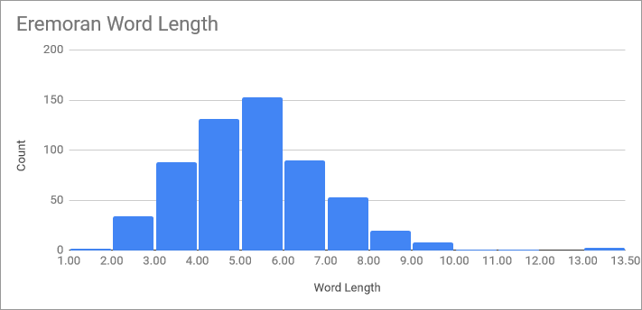
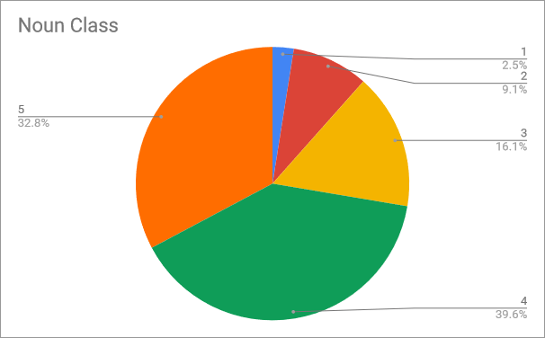
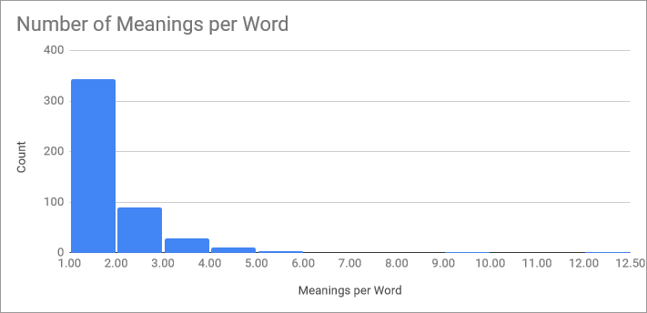

Eremoran Language

Eremoran (Eremoran: Eremorôm IPA: [ə.ʀəˈmɔ.ħom]) is the language spoken in Eremor (Eremoran: Eremor IPA: [əˈʀɛ.məʀ]), an early iron age society in the rapidly changing continent of Pankair, on the planet Oneia. The world itself is fairly earthlike, with only minor differences.
The following table is constructed for Proto-Eremo-Numoran:
| Labiovelar | Alveolar | Palatal | Velar |
|---|---|---|---|
| *m | *n | ||
| *b | *t *d | *tʃ | *k *g |
| *ɸ *β | *s | *ʃ | *x |
| *l *r | |||
PEN had 15 consonants and 7 vowels. There was likely no /p/ in Proto-Eremo-Numoran: it is totally absent in Numoran and many of the Eremoran words containing /p/ are known loans. In numoran, two of these vowels are lost, and /ʃ/ merged with /tʃ/.
Note that PEN had no pharyngeal consonants. Eremoran developed them under Pre-Eremoran influence, and under influence of the neighboring Takuan language family where they are common.
The syntax of Eremoran is probably the most divergent feature from other Muran languages. Proto-Muran was a strongly case-driven, genderless, strongly prepositional accusative language. Even as early as the PEN period, the language already lost many of these features.
PEN's parent proto-language, Proto-Muran, however, was a Nominative-Accusative language with eight cases, each of which is still extant in some Muran language. The word dir evolved from a PEN polite adjective *dir (originally, it could only refer to Humans) which was supplanted by the loan ou, from Pre-Eremoran *po. This adjective then marked human verb arguments, but the meaning broadened being an optional absolutive marker, but by Old Eremoran it then became mandatory.
PEN lost almost all traces of its case system, with the only inflection being in personal pronouns, for the nominative and accusative cases. By PEN the first traces of Eremoran's current prepositions can be found: *si (Dative; lost by Old Eremoran), *su (Genitive), and *xêd (Locative). In Numoran these became suffixes, but in Eremoran these became postpositions.
But not all changes were reductions in complexity. PEN began to decline adjectives, unlike other Muran languages, declining them to gender and possibly case (but this is disputed). By PEN, there were three genders: Masculine (*-r), Feminine (*-rre), and Non-human (*-Ø). The human suffixes seem to be related to the agentive suffix (*-êr), but the exact relation, and whether this is a coincidence, is difficult to ascertain, especially since all three morphemes seem to be a PEN innovation.
PEN also had a rather intricate system of counter words, many of which became new genders in its daughter languages, particularly Numoran. In Numoran, many of these counters replaced the singular-plural distinction which was lost in PEN. Proto-Muran distinguished number in personal pronouns, humans, most animate nouns, and a handful of inanimate nouns. In PEN, like in Proto-Muran, adjectives and verbs were not inflected for number.
PEN also significantly reduced Proto-Muran's complex system of verbal conjugation and verbal clitics. By PEN, the clitics totally vanished, and verbs only conjugated for three forms - nonpast, past, and conjunctive. While Numoran continues to use these forms, Eremoran merged the other two into the conjunctive form. This contrasts sharply with other Muran languages, which all retain the active/mediopassive voice distinction, two past tenses, and deontic and potential moods.
Proto-Muran contained only five vowels. PEN split *ê and *ô from *e and *o.
Many of the features of contemporary Eremoran, in contrast with other Muran languages, can be traced to the effect of the Pre-Eremoran substrate: politeness distinction, the negative prefix, the reorganization of the numeral system into groups of five, the numerals six to nine, the wholesale borrowing of the Pre-Eremoran writing and numeral system, penultimate stress as the default (other Muran languages have antepenultimate or lexical stress instead), the presence of /p/, and about 5% of the basic lexicon. The development of uvular R is thought to have also been influenced by the presence of /q/ in Pre-Eremoran. In addition, the loss of negative concord and the use of the locative ad as a comparative instead of the PEN particle *narm were also influenced by Pre-Eremoran.
| Feature | PEN | Numoran | Eremoran | Pre-Eremoran |
|---|---|---|---|---|
| Labials | /m b ɸ β/ | /m b~β f/ | /m b p f/ | /m p w/ |
| Uvulars | none | /ʀ/ | /q/ | |
| Stress | Antepenultimate | Unpredictable | ~99% Penultimate | Penultimate |
| Politeness | no distinction | Four Tiers | Three Tiers | |
| Numeral System | Base-10 | Hybrid Base-5/100 | Base-20 | |
| Six, Seven, Eight, Nine | *xagu, *saiu, *kau, *gaβu | xáyo, sáyo, kwe, gábo | elmnu, klimu, triksu, talsu | ēlmenus, akalīnus, chiknus, talnus |
| Negative Concord | Yes | No | ||
| Comparative | Particle (*narm) | Particle (nan) | Locative (ad) | Locative (ta) |
| Writing System | (none) | West Važcudic | South Važcudic | |
The following are known sound changes, arranged roughly from oldest to newest.
From Proto-Eremo-Numoran to Old Eremoran:
From Old Eremoran to Eremoran (ie. these sound changes were recorded):
Comparison between Proto-Eremo-Numoran, Eremoran, and Numoran:
| English | Eremoran | Numoran | Proto-Eremo-Numoran |
|---|---|---|---|
| beer | bornakt /ˈbɔħ.nəkt/ |
/ˈbweɾ.naxt/ | /ˈβɔr.naxt/ |
| hammer | bolant /ˈbɔ.lənt/ |
/ˈbwe.ʎent/ | /ˈβɔ.lɛnt/ |
| health | henlôm /ˈɛn.lom/ |
/ˈsjen.lon/ | /ˈsɛn.lom/ |
| knowledge | afêkam /əˈfe.kəm/ |
/aˈfe.kwen/ | /ˈa.ɸe.kɔm/ |
| person | mor /mɔħ/ |
/mweɾ/ | /mɔr/ |
| red | ereu /əˈʀɛu̯/ |
/ˈe.ɾjew/ | /ˈɛ.rɛ.u/ |
| sight | saurom /sau̯.ʀəm/ |
/ˈsjaw.ɾɔn/ | /siˈa.u.rɔm/ |
| that | ho /ɔ/ |
/swe/ | /sɔ/ |
The phonology is simultaneously simplifying and complexifying. In terms of simplification, there is the total loss of [h], And merger of e/o into a or ê/ô depending on stress. In addition, /r/ is merging with /l/ or combining with other consonants. Onset /k(l)/ → [g], and coda /kt/ → /t/. Onset and coda sC → C, and coda C(s/z) → C.
In terms of complexification, various combinations of plosive + R are turning into velarized/uvularized plosives, depending on speaker and region. Coda VN is turning into vowel nasalization. Coda Vl rounds /e o/ and drops.
The language is also undergoing a shift from a stress accent to a pitch accent, and transitioning towards moraic timing instead of syllablic timing. Codaless syllables are one mora, those with codas are two.
This reduces the maximal syllable structure down to (C)V(C), eliminates two vowels, and introduces several new consonant phonemes. Perhaps, then, in the future, the inventory will look like this:
| Labial | Alveolar | Dorsal |
|---|---|---|
| m | n | |
| b4 | t d | k2 ~ g1 |
| w1 | tˠ1 | ʁ1 |
| f3 | s z | |
| l1 |
There exists in Eremoran a rather rare construction that allows postponing adjectives. By verbalizing the adjective and construing it as a relative clause, one can turn, say:
ereur mor
into:
mor erez i kor id
This construction (with or without id) is becoming more and more common, and is often thought of as a single word:
mor erezikor
And after sound changes:
mo ezik
OSV word order, once rare, is becoming increasingly common. In colloquial speech, agents of transitive clauses are mandatorily topicalized, leading the topic marker i to turn instead into an ergativity marker. As adjectives are shifting to after nouns, so too is the absolutive marker dir. And as i is increasingly used as an ergative marker, it is increasingly common to cliticize them to nouns, yielding mori and mordir. With the impending sound changes, these result in moi and modi. The use of udou as a mandatory plural marker is also increasing. This leads to actual, real noun inflection:
| Singular | Plural | Origin | ||
|---|---|---|---|---|
| ABS | modi | modozikti | + dir | + udoz i ko dir |
| ERG | moi | modoziki | + i | + udoz i ko i |
| GEN | mosu | modoziksu | + -(i)su | + udoz i ko -(i)su |
| LAT | modazik | modazikto | + ad-az i ko | + ad-az ko-udo |
Due to the loss of /r/, The first noun class collapses into the fourth. With additional confusion brought on by the new adjective construction, this will (in the future, of course) cause the loss of the noun class system.
 |
Letter frequencies of Eremoran words. |
There are 11 consonants, and 7 vowels in Eremoran. Vowels change quality based on stress. Stress is typically penultimate, but in some loanwords, like, bikém, upiám, and kôbénk, it may be ultimate. A few native words like dáukaz, óidak, and their compounds retain their original PEN antepenultimate stress due to the awkwardness of penultimate stress in those words. Irregular stress is not indicated in the orthography, but for ease of learning they are indicated in the romanization with an acute accent over the stressed vowel. /i u/ do not reduce word-finally.
| Labial | Alveolar | Dorsal | Glottal |
|---|---|---|---|
| m | n | ||
| (p) b | t d | k | |
| f | s z | ʀ | (h) |
| l |
| Writing | Stressed | Unstressed |
|---|---|---|
| a a | ɑ | ə |
| e e | ɛ | ə |
| ê ê | e | e |
| i i | i | ɪ |
| o o | ɔ | ə |
| ô ô | o | o |
| u u | u | ʊ |
Acceptable consonant clusters:
Almost every diphthong combination is possible and attested. Triphthongs are rare, and require that the first two vowels be ai.
 |
 |
The primary pronounciation of the rhotic in contemporary Eremoran. |
The usage of /ħ/. |
Here is a table showing permissible places for a consonant within a word. Green = common, Yellow = rare (<2.5%), Red = impossible. ((C1)C2)V(C3(C4))
| Word | Onset | Coda | |||||
|---|---|---|---|---|---|---|---|
| Phoneme | Initial | Medial | Final | C1 | C2 | C3 | C4 |
| /m/ | |||||||
| /b/ | |||||||
| /p/ | |||||||
| /f~h/ | |||||||
| /n/ | |||||||
| /t/ | |||||||
| /d/ | |||||||
| /s/ | |||||||
| /z/ | |||||||
| /l/ | |||||||
| /k/ | |||||||
| /r/ | |||||||
Acceptable onsets: (Green = attested, Yellow = theoretically possible, Red = impossible)
| ↓C1C2→ | m | b | p | f~h | n | t | d | s | z | l | k | r |
|---|---|---|---|---|---|---|---|---|---|---|---|---|
| Ø | m | b | p | f~h | n | t | d | s | z | l | k | r |
| b | br | |||||||||||
| p | pr | |||||||||||
| t | tr | |||||||||||
| d | dr | |||||||||||
| s | sm | sp | sf | sn | st | sk | ||||||
| k | kl | kr | ||||||||||
The Eremoran writing system is derived from the logosyllabary of the Pre-Eremorans. Initially it used it as a syllabary and had complex rules for isolated consonants, but over time scribes stuck to the /a/-set, creating an abjad. This was then supplemented with vowels, creating a true alphabet.
The order of the alphabet generally moves from back to front in place of articulation, and from fricatives to plosives to nasals, with unvoiced consonants coming first. However, liquids were left at the end, then vowels were added, and the loan-letter for /p/ was re-borrowed (compare the symbol for /h/).
| Phoneme | Carving | Ink |
| k /k/ |  |
|
| s /s/ | ||
| z /z/ | ||
| t /t/ | ||
| d /d/ | ||
| n /n/ | ||
| h /h/ | ||
| b /b/ | ||
| m /m/ | ||
| r /ʀ/ | ||
| l /l/ | ||
| a /a/ | ||
| e /e/ | ||
| o /o/ | ||
| ê /ê/ | ||
| ô /ô/ | ||
| i /i/ | ||
| u /u/ | ||
| p /p/ | ||
Clarification:
Eremoran verbs do not inflect to person, number, or tense. However, they do inflect to aspect and mood, among other things.
There are many verbs that, unlike their English translations, do not permit subordination. These include the verbs for know (afêkz) and say/tell (rôz). Instead, the appropriate evidential is used.
I know that Eremor is in Pankair.
Eremor i Pankair ad ômôrz
Ker said that the wolves are eating.
Lusik i Ker hal namz morôz
There is no subordination for wish/hope either. The optative suffix -kaldoz is used instead. There is also no subordination for think/believe - the opinion evidential eto is used instead.
I hope that the ghost will leave.
tukilk i berbakikaldoz
I think that the painter is gay.
raêr i usedur eto
In fact, Eremoran does not permit any sort of content clauses whatsoever. However, it does permit relative clauses.
Relative clauses are double-headed. The relative clause itself is construed as the sentence topic, and the main clause follows naturally. Adverbial clauses use almost identical structuring.
The pet dog is biting the cat that ate the mouse.
Roraok dir kôbénk namz i dir roraok busk trikz.
| Eremoran | Meaning |
|---|---|
| ~ ad | Prospective |
| ~ dô | Continuous |
| -fkaz | Inchoative |
| -kudz | Terminative |
| ~ mok | Perfect |
| ~ momtantan | Habitual |
| -tônz | Defective |
| ~ urarz | Gnomic |
| Eremoran | Meaning |
|---|---|
| -kaldoz | Optative |
| Eremoran | Meaning |
|---|---|
| eto | Opinion |
| morôz | Hearsay |
| ômôrz | Visual non-alone |
| tan | Deductive |
| umôrz | Visual alone |
| Eremoran | Meaning |
|---|---|
| -kiz | (indicates intent) |
| -(o)boz | Intensive |
| -kunz | Venitive (non-productive) |
| -sudôz | Causative |
| -ubz | (indicates non-intent) |
Attributive possession is quite simple. The possessor is given a suffix that declines identically to regular adjectives:
mor → mosuk buskThe person's dog
The chicken's wing
The rock's name
They can even be catenated:
tanasbêsuk bôsu krifanThe elder's chicken's wing
There are four constructions for possession depending on the animacy of the possessor, and the topic of the clause.
| X has Y | |
|---|---|
| Animate Possessor Topic | X i dir Y |
| Animate Possessor Comment | Y i (X kul) mid |
| Inanimate Possessor Topic | X ad i dir Y |
| Inanimate Possessor Comment | Y i X ad |
For the most part, adjectives in Eremoran are very simple to understand. Like English, they precede the nouns they modify. The uninflected forms of regular adjectives (class 4) end in -u (or, for some determiners, another vowel):
ereu, talsu, kôbensu
Adjectives modifying class 1, 2, 3, and 5 nouns agree with their noun, and use the same marker as that noun:
ereut afêst, talsum bêm, kôbensur mor
There are two important irregularities to watch out for. The first is undeclinable adjectives, which end in a consonant:
id afêst, hans bêm
There second, rarer type is the s-triggering adjectives. These include all adjectives of age (eg. muk), shape (eg. zesti), and size (eg. ela), except dou and udou since those evolved from a quantity word, and endu and undu, since those evolved from an altitude word. Examples include:
tar saskaskru
muk saskaskru
nub sormor
kusan sormor
In the category also existed opinion adjectives, but those have long since regularized.
Care must be taken with numerals and plural quantifiers. When the numeral precedes the quantifier, it indicates the total. For example, "one all" = "each", and "two all" = "each pair". When it follows the quantifier, it indicates the set is being considered in groups of that size. For example, "all one" = "all one", and "all two" = "all two". For other determiners, however, the numeral always follows the determiner.
Eremoran typically distinguishes adjectives from adverbs very well, unlike colloquial English. Most uninflected adjectives end in -u, and most adverbs end in -lk, with very little exception. But there is a small class that lies in an awkward space in between. These are the reactives - defôz, haia, nen, and obo. Like adverbs, they come after what they modify. Unlike adverbs, however, they can modify nouns in addition to verbs. Like adjectives, these do not split adpositions from the nouns they modify. In the dictionary, most of these are listed as particles except defôz, which is traditionally classified as a verb despite its contemporary usage.
When modifying a clause, reactives tell the listener that the speaker experienced the reaction from that situation. Likewise, when modifying a noun phrase, reactives tell the listener that the existence of the noun phrase elicited that reaction.
Because of this use with noun phrases, the reactive obo is commonly used where other languages would use words like lo and behold.
While the structure of defôz clearly indicates it derives from a verb, and nen appears to be an old reduplicated form of ne, the ultimate origin of the remaining reactives is elusive. They appear even in the oldest texts, alongside adjectives and adverbs, and even then do not bear obvious structural similarities to any other word class or inflected form.
In addition to its rich system of paralinguistic clicks, Eremoran contains many hand gestures carrying meaning. Their use is so common among Eremorans that many of the more common gestures are even understood in neighboring cultures. Since they originated among traders, many of the signs concern commerce.
Finger-counting is done starting with the dominant thumb, and extending left, as in much of Europe. Humans are pointed at with all fingers, not just one, as for non-humans.
Integers in Eremoran are a hybrid Base 5/Base 100 system. For numbers under 100 it follows a strict Base 5 system, albeit with special names for the numbers 6-9. Numbers from 75 to 99 are constructed predictably but the pattern abruptly ends at 100, which instead of being *babzananu is instead sesu. The system then goes by powers of 100; 10,000 is sesesu, 1,000,000 is sesesesu, and so on.
The numbers 11-14 are also traditionally irregular, although it is increasingly common to instead regularize them.
The fractional parts of numbers, however, are strictly decimal. It is common to say hanu edzam to mean five parts of something, ie. half of something. Equally common would be to say nasisam. Likewise, one can say id edzam or nasanisam to mean one tenth.
Higher powers of ten are expressed with ordinal suffixes to edzam. edznasisam, or second part, would mean one hundredth. Pi to two digits would thus be kumku id edzam babzu edznasisam, but it might be faster to simply say kumku klimisam. Alterntively, one could also say kumku tambabzu edznasisam.
In writing, Eremoran uses a base-20 system. The numbers 0-19 are as follows:
0123456789abcdefghij
The digits are written left-to-right. Fractions of the form 1/n are represented as a line under n. Fractions that cannot be represented this way, eg. 2/5, are written as a sum of fractions, eg. 55.
Eremoran has five basic color terms and a variety of terms for others:
Personal pronouns are generally avoided, but when used, they refer to the relative social status of the speaker and listener. In increasing order of politeness:
| Formality | Gender | Word | Etymology |
|---|---|---|---|
| Disrespectful | A | umobor | uo- + mo- + uo- + -r |
| A | utôzdmêr | utôzdmu + -êr | |
| Informal | A | umor | uo- + mor |
| A | mar | mat + -r; influenced by mara | |
| Neutral | A | omor | o- + mor |
| F | ôkar | o- + okar | |
| X | omok | omor + -k | |
| Formal | A | kair | -kair |
| A | omôr | o- + mo- + o- + -r | |
| A | oker | o- + ker | |
| X | môk | mo- + o- + -k |
Intimate equals tend to use neutral pronouns with each other. Upper-class folk unfamiliar with each other often instead stick to formal pronouns. Between classes, the higher class individual is referred to with the formal pronouns, and lower class with informal pronouns. Employer-employee and customer-host relations are treated similarly to class divides.
Because of their neutrality, the neutral pronouns are often used, like English "you", as indefinite pronouns meaning "one".
As stated above, pronouns are generally avoided. It is common to use names or job titles as a circumlocution, especially among children.
-kair is often used as a polite address, comparable to "mister" and "miss", or "sir" and "madam". While it is occasionally used as a pronoun itself, this has become uncommon.
omôr is the most common and neutral polite pronoun.
oker would only be used to refer to a superior, like an employer, master, or a liege. It is not, unlike omôr, used to refer to the customer in customer-host relations, or between unfamiliar aristocrats. The choice between oker and omôr is usually dictated by the superior, to their whim.
môk is used to refer to deities, but only by the clergy. Layfolk use the neutral omok instead.
| Formality | Yes | No | Etymology |
|---|---|---|---|
| Casual | ok | dadal | Eye dialect spelling of holk from dadal 'ash; dust' |
| Neutral | holk | uid | ho + -lk u- + id |
| Formal | hona | PEN *ɸona |
| eng. | ere. | parity |
|---|---|---|
| extremely | hai | postive |
| rather | hô | |
| somewhat | huri | |
| not very | tu | negative |
| not at all | ban |
| Eremoran | English | Terran Equivalent | Notes | ||||||||||||||||||
|---|---|---|---|---|---|---|---|---|---|---|---|---|---|---|---|---|---|---|---|---|---|
| rilm | day | 28.93 h | - | ||||||||||||||||||
| nem | year | 2 mo 14 d | |||||||||||||||||||
| bikém | two decades | 4 yr 1 mo 7 d | In Eremoran culture:
|
| Eremoran | English |
|---|---|
| bazêr | king |
| okar | queen |
| mananuk | rook |
| numêr | bishop |
| ek | knight |
| subir | pawn |
| bat | chess, check |
| batlitam | checkmate |
| Eremoran | English | Latin |
|---|---|---|
| ad | at, by, during, for, into, onto, plus, to, towards, until, up to, while | ad, adusque, apud, dum, gratia, in, ob, pro, super, usque, vorsum |
| bo | using, with | per |
| din | because of, beyond, minus, out of | clam, clanculum, ex, extra, praeter, trans, uls, ultra |
| dir | [Absolutive Case Marker] | |
| dô | divided by, in, on | cis, in, intro, secus, super |
| hal | according to, in accordance with | cata, iuxta, penes, secundum, specie, vice |
| i | [Topic Marker] | |
| it | as opposed to, instead of, in contrast to, rather than | contra, erga, exadversum |
| ku | times, with | cum |
| kul | about, around, concerning, near, next to | circa, circiter, circum, iuxta, prope, re |
| mo | before, behind | ante, pone, post, prae |
| nad | as | qua |
| nost | below, under | infra, sub, subter |
| smad | chez | apud |
| su | of | de |
| tan | after, in front of | ante, coram, palam, post, prae |
| uku | without | absque, sine |
| what | this | that1 | that2 | none | some3 | |
|---|---|---|---|---|---|---|
| what | nau | ko | hoki | ho | unau | nanau |
| who | monar | mokor | môkir | mosor | mônar | monanar |
| where | kinam | kikom | kiokim | kiom | kiunam | kinanam |
| how | hoz | hokoz | hôkiz | hosoz | hônaz | honanaz |
| why | bainam | ur | - | |||
| what kind of | temêmonam | tôu | ||||
| whose4 | nasu | - | ||||
Notes:
| English | Eremoran |
|---|---|
| Hello! Hey! Hi! | Henlôm Uzurkum rilm |
| Goodbye! | Henlôm |
| Gesundheit! Bless you! | Henlôm Zikrômbór berbkaldoz |
| Cheers! | Henlôm Ukumut mumat |
| Please, ~! | ~ hod tômz |
| Thank you! | Uzurkelau |
| Sorry! | liba berbkaldoz as |
| Excuse me! | berbkaldoz |
| Nice to meet you! | Uzurkum salim |
| Good morning! | Uzurkum dam |
| Goodnight! | Uzurkum urilm |
| Darn! Dang! | Utôzdmu |
| I'm lost. | Salitamaz |
| Please, help! | Hakz hod tômz |
| I'm very sick/hurt. | dir zurkum defôz |
| My ~ hurts. | dir zurkum ~ ad |
| Call the police! | dir afêssaur tukukaldoz |
| You are very beautiful. | omor i hai uzurkelaur |
| I love you. | dir omor kopz |
| What is your name? | Tukum ne Tukum i dir naum ne |
| My name is ~. | Tukum i ~ |
| Where are you from? | kinam din dáukaz ne |
| I am from ~. | ~ din dáukaz |
| How are you? | Hoz afkaz ne |
| I am well. | Uzurkulk afkaz |
| I am unwell. | Zurkulk afkaz |
| How old are you? | hoz udoum nem ne |
| I am ~ years old | ~ nem |
| How do you say ~ in Eremoran? | ~ i eremorôm bo dir nau ne |
| Do you speak Eremoran? | Eremorôm i afêkz ne Eremorôm i rôtômz ne |
| Where is ~? | ~ i kinam ad ne |
| ~ is here. | ~ i kikom ad |
| Where is the nearest hotel? | kuludoid dodamat i kinam ad ne |
| How do I get to ~? | ~ i kinam bo ne |
| You can get to ~ through ~~. | ~ i ~~ bo tômz |
| Is anyone here a doctor? | kikom ad i dir henlôsudôêr ne |
| Where does it hurt? | zurkum i kinam ad ne |
| How much does it cost? | purrum i naum ne |
| Would you like to play chess? | dir bat nomkaldoz ne |
| Do you want to go to a ~? | ad ~ afkakaldoz ne |
| ... bar? | bibimat |
| ... brothel? | bimat |
| ... forest? | lilira |
| ... hotel? | dodamat |
| ... smithy? | aramaêmat |
Compile word list Compile initials Compile medials Compile finals Compile length Compile noun class Compile meanings
There are currently about 500 words in the dictionary.
While toponyms can be of any noun class, reflecting their roots, in practice, 2nd class toponyms do not exist, and 4th class toponyms make up the majority. Many locations are simply formed dithematically:
First component:
Either component:
Second component:
Dithematic names are pervasive in Eremoran culture, and they form the vast majority of names. Nonetheless, single-component names like Ker and loans like Iúr are somewhat common as well. Family names come before given names, but are generally only used by the nobility. Common components are as follows:
First component:
Either component:
Second component:
Here are some common or notable names:
| EN | ER |
|---|---|
| They say a cat went onto the table. | Dir roraok ad abakt afkaz morôz. |
| Did a cat go onto the table? | Dir roraok ad abakt afkaz ne. |
| Wouldn't it be interesting if a cat got onto the table? | Dir roraok ad abakt afkaz nen. |
| Maybe a cat went onto the table. | Dir roraok ad abakt afkaz kasraz. |
| A cat went onto the table. | Dir roraok ad abakt afkaz. |
| A cat did not go onto the table. | Dir roraok ad abakt afkaz uid. |
| A cat is on the table. | Dir roraok abakt ad. |
| A cat is not on the table. | Dir roraok abakt ad uid. |
Note: Upper IPA is educated speech, analogous to RP or the Transatlantic dialects of English, and the lower IPA is the hip, trendy youthspeak.
From an unknown challenge. Audio recording from Tariq-bey
Henlôm i anôm su ad kalom baim didulk dan. truth TOP imagination GEN DAT lack excuse just usually /ˈ(h)ɛn.lom i ˈa.nom su ad ˈga.ləm bai̯m ˈdi.ðʊʕʷk dan/ /ˈen.lõ i ˈa.nõ su at ˈka.ləm paĩ̯ ˈti.zukʰ tã/ The truth is usually just an excuse for a lack of imagination.
Python.
Udouk addzalk omor su skôkiêt ad defôz! PL eel 1 GEN fly:tool LOC INT /ˈu.ðʊk ˈad.dzəʕʷk ˈɔ.məʀʷ su ˈskok.jet ad ˈdɛ.foz/ /ˈu.zukʰ ˈat.tsukʰ ˈo.mo su ˈskʰokʰ.jetʰ at ˈte.foz/ My hovercraft is full of eels!
The one ring's inscription.
Id abu i dir hans baz, id abu i saliz, Id abu i dir hans saliz, urilm dô barz ku. One Ring to rule them all, One Ring to find them, One Ring to bring them all and in the darkness bind them.
From an Ithkuil sample.
Dir puhafêkur bukêr maiusêr su nuhisêm kul tar sirinam dir saliz tan libófkaz. ABS NEG:know:ADJ:AGR clothing:'-er' silly:'-er' GEN nude:NMLZ about new AGR~order:NMLZ ABS find after cry<INCH> The incompetent tailor began to cry after finding out about the clowns’ new directive on nakedness.
Pangrams:
Perfect pangrams: Ho nubêr it spem dô kalz. "In change, that, instead of the infant, seeks." Numêr hal bi kot dô spez. "According to a courier, leaves change things in shields." Holk, ô, id bêm tan spez. "Yeah, anyways, change after one period." Ur, holk, andôt i bêm spez. "So, yeah, age changes the oven." Hisk mo bêtu len dô parz. "It chops behind a crow, in a loyal stone." Ô, krum hal tobê din spez. "Anyways, according to science, things change from sticks." Mus din betlaêr kopz hô. "Longswordsmen from flotsam love rather much." Pi, holk, temêr sudôz ban. "Ooh, shiny^1 !, Yeah, father doesn't do anything at all." ^1 I have no idea how to translate this, but it's an onomatopoeia. Ô, bêm sparz hod, tukil ne? "Anyways, if the era supports it, what about wind?" Spart môlz hod ube, kinê. "Nor if the fountation wakes you, reeds." Pi? Holk, se ban, utôzdmêr! "Shiny? Yeah, not even a grain, you fiend!" Halku tobê dinrôz: spem! "An important stick announces: change!" ~~~~ Honorable Mentions: Tobê i rilm spez dan hô ku. "And days are changed by sticks rather often." (only one letter is duplicated: i) ~~~~ Pemik i betlaêr sudôz hona. "Snakes are indeed made by the longswordsman." All letters of the Eremoran alphabet appear at least once; only a, e, and i appear twice. ~~~~ Many pangrams rely on the root spe- (change) because it contains the uncommon letter p, only found in loanwords.
Bible quotes:
Exod. 3:14 Kek i dir Moser "môk i môk" bo rôz. Umor i dir Israél din elaêr "Dir id habiz i id dinbamz mok." bo rôtamaz ur. And God said unto Moses: 'I AM THAT I AM'; and He said: 'Thus shalt thou say unto the children of Israel: I AM hath sent me unto you.' Deut. 10:16 Liba su dir bukeba parz hod, arz uid dimok ur. Circumcize therefore the foreskin of your heart, and be no more stiffnecked.
| EN | ER | Gloss |
|---|---|---|
| The sun shines. | Dir ril siz. | ABS sun shine |
| The sun is shining. | ||
| The sun shone. | ||
| The sun will shine. | ||
| The sun has been shining. | ||
| The sun is shining again. | Dir ril siz nasisulk. | ABS sun shine again |
| The sun will shine tomorrow. | Dir ril siz addam. | ABS sun shine tomorrow |
| The sun shines brightly. | Dir ril siz siulk. | ABS sun shine bright-ADV |
| The bright sun shines. | Siu dir ril siz. | bright ABS sun shine |
| The sun is rising now. | Dir ril rankenz mok. | ABS sun rise now |
| All the people shouted. | Hans mor i tukuz. | all person TOP shout |
| Many of the people shouted twice. | Udour mor i tukuz nasulk. | many-AGR person TOP shout two-ADV |
| Happy people often shout. | Pankur mor tukuz momtantan. | happy-AGR person shout HAB |
| The kitten jumped up. | Roraodok i kumz. | cat<DIM> TOP jump |
| The kitten jumped onto the table. | Roraodok i ad abakt kumz. | cat<DIM> TOP DAT table jump |
| My little kitten walked away. | Omosuk roraodok i kraz ôdulk. | 1:POSS:AGR cat<DIM> TOP walk away |
| It's raining. | Hafaz. | rain |
| The rain came down. | Dir hafa dáukaz -. | ABS rain come down |
| The kitten is playing in the rain. | Roraodok i hafa dô nomz. | kitten TOP rain LOC play |
| Many little girls with wreaths of flowers on their heads danced around the bonfire. | Udour dir iktêdor ho su tô dô seba su - ku ardoudot kul -. | many-AGR ABS girl<DIM> DET head INE flower GEN wreath COM fire<AUG> CIRC dance |
| The crow dropped some pebbles into the pitcher and raised the water to the brim. | Hisk i nanau dir lendo ad mumat tritaisudôz ku dir mu ad imô rankensudôz. | crow TOP some ABS rock-DIM DAT water-container-[class 3] fall<CAUS> and ABS water DAT edge rise<CAUS> |

Welcome to the Eremoran language, where the antonym of duck is brick, where before means after and after means before, despite the words being antonymous in both English and Eremoran, where yesterday and tomorrow are the same word, but ereyesterday and overmorrow are different words, and the absolutive is inexplicably an adjective. Where the direct object is in the absolutive, unless hands performed the action, in which case it can also be in the genitive. Which am I supposed to use? What do you mean "whichever makes sense"? How am I supposed to know that?!
Where two topic markers is "confusing" but two absolutives can be "easily resolved by context". Where when an action is performed is irrelevant, but the duration, repetition, and other temporal aspects are apparently vital. Where double negatives are ungrammatical unless an adverb is involved. Where you could swear the only postpotition used is "ad", a-
Wait, did you just use it as a preposition? You mean it can be both? What do you mean, "it totally changes the meaning"?
Why does the word for one usually refer to multiple things?
How does subordination work again? What do you mean "it depends on the verb", I simply want to use subordination with "know" or "want" or something. What do you mean those don't subordinate???
Why is there no relative pronoun in this relative clause? What do you mean there aren't relative pronouns? I have to say the topic TWICE?!?!
| ID | State | Reason | Dialect Info/Etc. Notes | |
|---|---|---|---|---|
| 1A | Small | 11 < 15 | as few as 9 and as many as 13 | |
| 2A | Large | 7 > 6 | as few as 5 | |
| 3A | Low | 1.57 < 2 | as low as 1.29 and as high as 2.4 | |
| 4A | In both plosives and fricatives | t-d and s-z | ||
| 5A | Both missing | /p g/ | for some dialects, other | |
| 6A | Uvular continuants only | /ʀ/ | for some dialects, none | |
| 7A | No glottalized consonants | |||
| 8A | /l/, no obstruent laterals | /l/ | ||
| 9A | No velar nasal | |||
| 10A | Contrast absent | n/a | for some dialects, contrast present | |
| 11A | None | |||
| 12A | Complex | eg. abakt | ||
| 13A | No tones | |||
| 14A | Penultimate | |||
| 15A | Fixed stress (no weight-sensitivity) | |||
| 16A | No weight | |||
| 17A | No rhythmic stress | |||
| 18A | All present | |||
| 19A | None | |||
| 20A | Isolating/concatenative | |||
| 21A | Monoexponential case | |||
| 21B | Monoexponential TAM | |||
| 22A | 4-5 categories per word | Aspect (+8), Mood (+1), Evidential, (+5), Intent (+2), Intensive (+1) | ||
| 23A | Dependent marking | |||
| 24A | Dependent marking | |||
| 25A | Dependent marking | |||
| 25B | Non-zero marking | |||
| 26A | Strongly suffixing | |||
| 27A | Productive full and partial reduplication | See Morphology | ||
| 28A | No case marking | |||
| 29A | No subject person/number marking | |||
| 30A | Five or more | 5 | ||
| 31A | Non-sex-based | |||
| 32A | Semantic | |||
| 33A | Plural word | udou | ||
| 34A | All nouns, always optional | |||
| 35A | Number-indifferent pronouns | |||
| 36A | Unique affixal associative plural | -(i)sur | ||
| 37A | No definite or indefinite article | |||
| 38A | No definite or indefinite article | |||
| 39A | 'We' the same as 'I' | |||
| 40A | No person marking | |||
| 41A | Three-way contrast | ko, hoki, ho | ||
| 42A | Identical | |||
| 43A | Related for non-human reference | |||
| 44A | In 3rd person + 1st and/or 2nd person | |||
| 45A | Pronouns avoided for politeness | |||
| 46A | Generic-noun-based | eg. kinam | ||
| 47A | Identical | see mi | ||
| 48A | No person marking | |||
| 49A | No morphological case-marking | |||
| 50A | No case-marking | |||
| 51A | Postpositional clitics | |||
| 52A | Differentiation | bo - ku | ||
| 53A | One-th, two-th, three-th | id > idisu | ||
| 54A | No distributive numerals | |||
| 55A | Absent | |||
| 56A | Formally similar, not involving interrogative expression | uid - uidu | ||
| 57A | No possessive affixes | |||
| 58A | Absent | |||
| 58B | None reported | |||
| 59A | No possessive classification | |||
| 60A | Genitives and adjectives collapsed | |||
| 61A | Without marking | |||
| 62A | Sentential | |||
| 63A | 'And' different from 'with' | hans vs. ku | ||
| 64A | Differentiation | hans vs. ku | ||
| 65A | Grammatical marking | |||
| 66A | No past tense | |||
| 67A | No inflectional future | |||
| 68A | From 'finish', 'already' | mok | ||
| 69A | Tense-aspect suffixes | |||
| 70A | No second-person imperatives | |||
| 71A | Normal imperative + normal negative | |||
| 72A | Maximal system | |||
| 73A | Inflectional optative present | |||
| 74A | Verbal constructions | |||
| 75A | Verbal constructions | |||
| 76A | No overlap | |||
| 77A | Direct and indirect | |||
| 78A | Separate particle | |||
| 79A | None | |||
| 79B | None (= no suppletive imperatives reported in the reference material) | |||
| 80A | None | |||
| 81A | SOV | |||
| 83A | OV | |||
| 84A | XOV | |||
| 85A | Postpositions | |||
| 86A | Genitive-Noun | |||
| 87A | Adjective-Noun | |||
| 88A | Demonstrative-Noun | |||
| 89A | Numeral-Noun | |||
| 90A | Relative clause-Noun | |||
| 90B | Relative clause-Noun (RelN) dominant | |||
| 90G | Double-headed dominant | |||
| 91A | Degree word-Adjective | |||
| 92A | Final | |||
| 93A | Not initial interrogative phrase | |||
| 94A | Final subordinator word | |||
| 95A | OV and Postpositions | |||
| 96A | OV and RelN | |||
| 97A | OV and AdjN | |||
| 98A | Ergative - absolutive | |||
| 99A | Ergative - absolutive | |||
| 100A | Neutral | |||
| 101A | Optional pronouns in subject position | |||
| 102A | No person marking | |||
| 103A | No person marking | |||
| 104A | A and P do not or do not both occur on the verb | |||
| 105A | Indirect-object construction | |||
| 106A | Distinct from reflexive | mi - as | ||
| 107A | Absent | |||
| 108A | No antipassive | |||
| 108B | no antipassive | |||
| 109A | No applicative construction | |||
| 109B | No applicative construction | |||
| 110A | Sequential but no purposive | |||
| 111A | Morphological but no compound | |||
| 112A | Negative particle | |||
| 113A | Symmetric | |||
| 115A | Predicate negation also present | |||
| 116A | Question particle | |||
| 117A | Both Locational and Topic | |||
| 118A | Nonverbal encoding | |||
| 119A | Identical | |||
| 120A | Possible | |||
| 121A | Locational | |||
| 122A | Non-reduction | |||
| 123A | Non-reduction | |||
| 124A | Subject is left implicit | |||
| 125A | Balanced/deranked | |||
| 126A | Balanced/deranked | |||
| 127A | Balanced/deranked | |||
| 128A | Balanced/deranked | |||
| 129A | Different | |||
| 130A | Different | |||
| 131A | Decimal | |||
| 132A | 5 | |||
| 133A | 9-10 | 9 | ||
| 134A | Black/blue vs. green | tasu vs. ulu (but see also linku) | ||
| 135A | Red vs. yellow | ereu - kanu | ||
| 136A | No M-T pronouns | |||
| 136B | m in first person singular | |||
| 137A | No N-M pronouns | |||
| 137B | m in second person singular | |||
| 138A | Others | |||
| 141A | Alphabetic | |||
| 142A | Logical meanings | /ǀ/ - no; /ǁ/ - yes | ||
| 143A | VNeg | |||
| 143F | VNeg | |||
| 144A | SOVNeg | |||
| 144B | Immed postverbal | |||
| 144L | SOVNeg | |||
| 144S | Word&NoDoubleNeg |
Universals not Violated: 1-6; 8-110; 113-123; 125-195; 197-207; 209-239; 241-257; 259-261; 264-295; 297-321; 323-347; 349-371; 373-378; 380-387; 389-438; 440-443; 445-458; 460-490; 492-512; 514; 516-521; 523-585; 588-668; 670-680; 682; 684-707 (todo) Universals Violated: 7; 111-112; 124*; 196; 208; 240; 258; 262-263; 296; 322; 348; 372; 379; 388; 439; 444; 459; 491; 513; 515; 522; 586-587; 669; 681; 683; 708
 |
Initial frequencies of Eremoran words. |
 |
Medial frequencies of Eremoran words. |
 |
Final frequencies of Eremoran words. |
|  |
Histogram of Eremoran word length. cf. these histograms of other languages |
|  |
Frequencies of noun classes in Eremoran. |
|  |
Frequencies of number of meanings per word in Eremoran. |